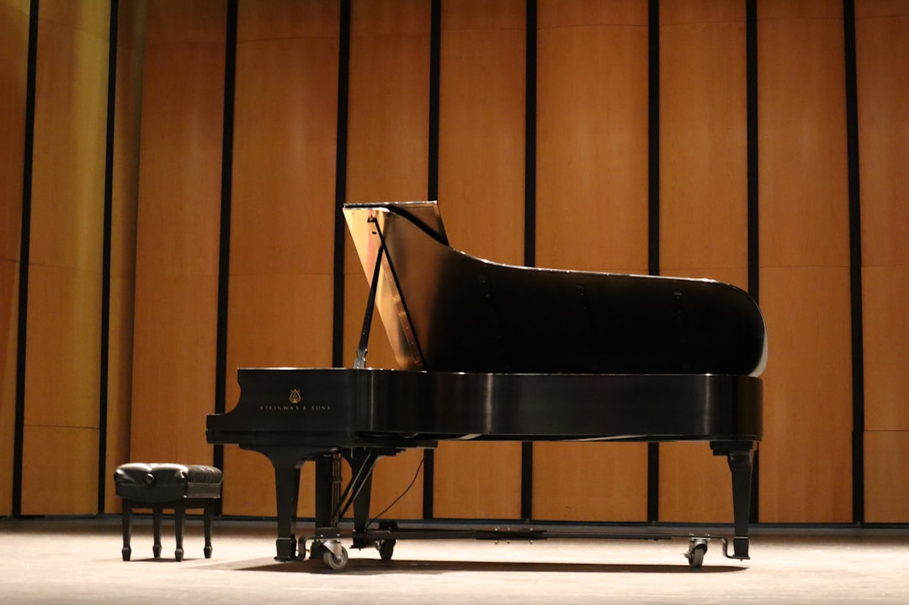

Entry · Sunday, May 17, 2026

Plate N. A Steinway grand piano, contemplating the sea breeze.
Grand Piano, Concert
/GRAND pee-AN-oh KON-sert/ n.- 1. A substantial, resonant keyboard instrument, designed for symphonic performances, characterized by its elongated, curvaceous body that demands both reverence and a spacious venue.
- 2. colloq. A musical behemoth, unapologetically thiccc, exuding grandeur and sonorous vibes, often seen lounging in concert halls like it owns the place.
In a sentence,
"Even in the presence of a thiccc Steinway grand piano, concert-goers found themselves lost in its commanding acoustics."
Etymology,
The term 'piano' is derived from the Italian 'pianoforte,' which translates to 'soft-loud,' referring to the instrument's dynamic range. 'Concert' traces back to the Latin 'concertare,' meaning 'to bring together.' Together, they promise a heavyweight performance, no cardio required.